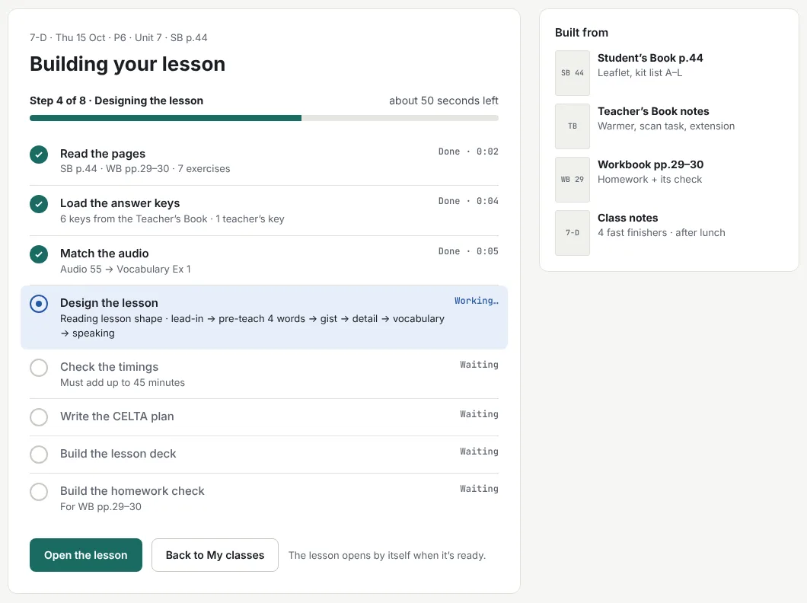
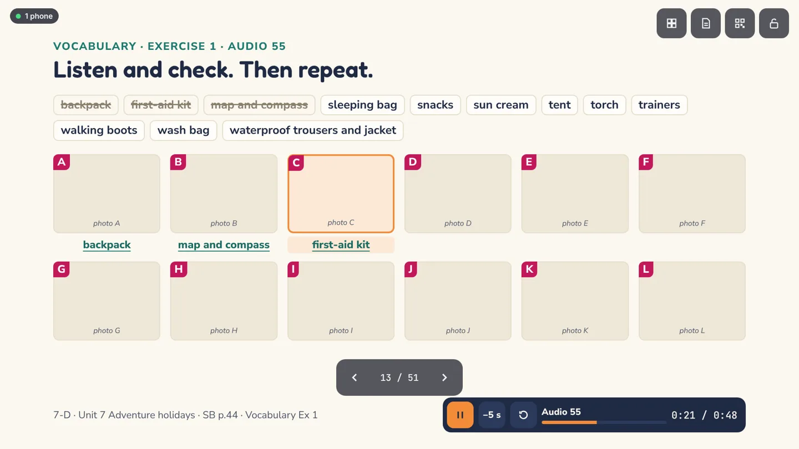
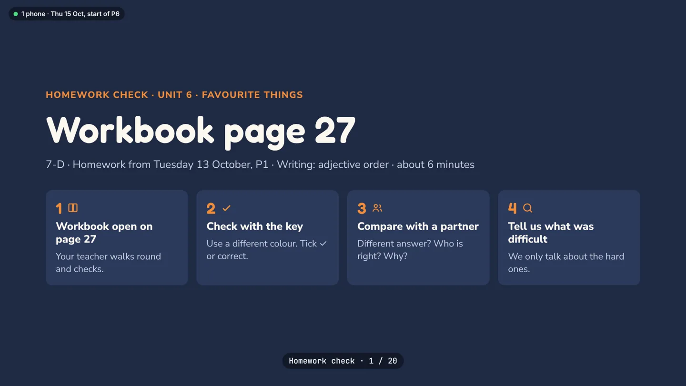
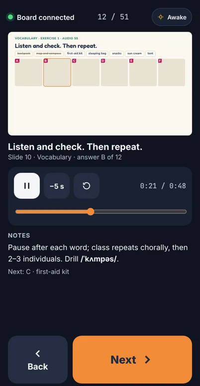

Projects
Work
Things I build outside the classroom, mostly for the classroom: tools for teachers, a platform for IELTS learners, a podcast, and the reward systems at my school. Each one started as a problem in my own teaching.
Book2Board
Tomorrow's Prepare lesson, ready to teach.
Live · pilot
A web app for teachers who use Cambridge Prepare (2nd edition). Pick the lesson from your school's plan and it builds three things from the Student's Book, Workbook and Teacher's Book: a CELTA-style lesson plan, a staged 45-minute slide deck with the book's audio right on the slides, and a short homework-check deck for the next lesson.
It is in a pilot at Rahimov School: free, with invites through Telegram. It covers Prepare Levels 2 and 3 so far.
- Answers appear one at a time, inside the sentence
- The book's audio plays on the slide
- A homework check in about six minutes, after Ur, Scrivener and Harmer
- Nothing to install on the board or the phone
How it works
- 01
Pick the lesson
Class, date and book pages come from the school's lesson plan, so the next lesson is already waiting.
- 02
It builds the lesson
It reads the pages, loads the answer keys, matches the audio, designs the stages and checks that the timings add up to 45 minutes.
- 03
Check it, change it
Nothing reaches the board until the teacher says OK. Any slide can be edited.
- 04
Teach it
Open the deck on the classroom board and scan the QR code: the phone becomes the remote, with notes, concept-checking questions and timings only the teacher sees.




Screens from the design prototype
CEQ-Prep Progress Tracker
Who needs help this week, at a glance.
Live
A progress tracker for teachers preparing children and teens for Cambridge English exams, from Pre A1 Starters to B1 Preliminary for Schools. Teachers record practice-test results part by part, and the tracker shows which students, and which parts of the exam, need attention this week.
For each exam part it suggests teaching ideas: six for the whole class and six for students scoring 50% or less, each tied to the reason they lose marks. Every set has at least one tech activity and one that gets students moving. Sources come from Cambridge's own materials first, then named ELT writers; the idea library is being written part by part, across all 60 parts of the five exams.
- Starters, Movers, Flyers, A2 Key and B1 Preliminary for Schools
- In English, Uzbek and Russian
- School accounts set up by the admin
How it works
- 01
Record the results
After each practice test, enter scores for every part: Reading, Listening, Writing, Speaking.
- 02
See the class
A grid of students by exam part shows the weak spots in colour.
- 03
Open a weak part
Get strategies matched to why students miss it, for the whole class or just the ones who need it.
- 04
Re-test
Teach, test again, and watch that part turn green.
IELTS Pro Gang
Training for band 9, with the feedback to get there.
Live
An IELTS platform: full Listening and Reading tests, Writing and Speaking assessed against the four official criteria, and a dashboard that tells a learner exactly what is holding their band back.
I built it to push my own English toward band 9, and to take learners there with me: band 9 academic writing, full Listening and Reading comprehension, and speaking that sounds like a fluent user of the language.
- Listening and Reading in full test format
- Writing and Speaking feedback on the official criteria
- Accuracy for every question type
How it works
- 01
Take tests and mocks
Full Listening and Reading tests, and mock exams that unlock as you go.
- 02
Get assessed
Writing and Speaking are scored criterion by criterion: task response, coherence and cohesion, vocabulary, grammar.
- 03
Find the bottleneck
The lowest criterion, the gap between written and spoken vocabulary and grammar, how consistent the last five attempts were, and accuracy by question type.
- 04
Practise the weak spot
Daily tasks, an Improve library, grammar and vocabulary practice, and an assistant for questions.
Teacher podcast
Methodology, talked through.
In progress
A podcast for English teachers. The Uzbek series started with preparing beginner and elementary students for exams and certificates, then the fundamentals I took from CELTA: the difference between teaching language and teaching skills. Lesson planning and staging is next.
An English series is planned: solo episodes of about 20–25 minutes, built on a list of 45 topics from CELTA and CTYL methodology, starting with language versus skills.
Gamification at Rahimov School
Rewards that support motivation rather than replace it.
Rahimov School
I lead the gamification and reward systems at Rahimov School, across its three branches. The work is redesigning the school's points economy so that it rewards what matters, mainly reading, without teaching students to work only for the coins.
The design leans on Self-Determination Theory (autonomy, competence, relatedness) and on Goodhart's law: once a number becomes the target, it stops measuring what you cared about. So there are fewer, clearer categories, a monthly book that students finish before they can spend, and recognition for reading milestones alongside the coins.
How it works
- 01
Ask
A staff audit across all three branches: what each reward category actually changes.
- 02
Cut
Collapse dozens of categories into a few clear ones, with reading at the centre.
- 03
Gate
Spending in the school auction and shop opens only after the monthly book.
- 04
Recognise
Reading milestones and conduct awards, so the reward is also being seen.